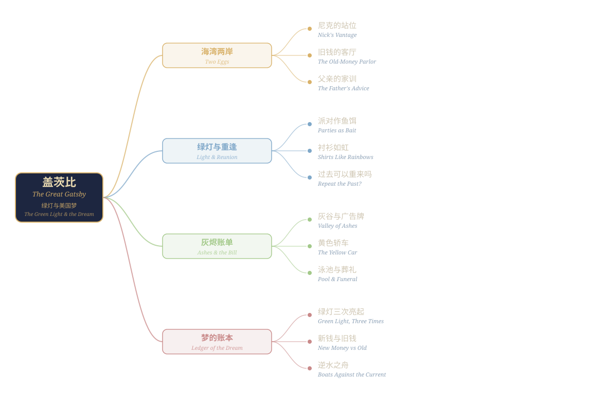

了不起的盖茨比
〇 · 书籍信息
基本信息
| 书名 | 《了不起的盖茨比》（The Great Gatsby）——书名里的「Great」既是盖茨比自我封号的回声，也是尼克含泪的反讽：他是了不起的，因为他把一整个人生押在了一个喊不回来的名字上 |
|---|---|
| 作者 | 菲茨杰拉德（1896–1940），「爵士时代」的命名者与祭司。写作本书时穷困潦倒、妻子泽尔达正闹婚变——他把自传全部熔进小说：盖茨比爱黛西，就是菲茨杰拉德爱泽尔达的重演 |
| 背景 | 1925 年：禁酒令下的暴富时代，西卵是新钱（New Money），东卵是旧钱（Old Money），两者隔着一道海湾互相瞧不起——地理即阶级，这是全书最先要学会读的一张地图 |
| 体裁 | 第一人称限知叙事：尼克既在局中又在局外——他是全书唯一「听完整个故事」的人，也因此在结尾拿到了唯一的判决权 |
| 一句话 | 盖茨比用五年造了一座灯塔，灯罩上写着「黛西」：绿灯不是爱情，是时间——一个人能向未来挥手，却只能向过去摆渡。 |
一 · 核心主题总览
九个章节的湾流里埋着四组母题：① 绿灯与美国梦（全书引擎）
码头尽头的绿灯，是盖茨比每晚伸手想抓的东西——黛西住的地方，也是「未来」本身。尼克在结尾点破：盖茨比信的是那盏绿灯，是「一年年在我们眼前退去的极乐未来」——梦的本质不是得到，是「明天就差一步」。
② 新钱与旧钱（阶级的两种冷）
汤姆与黛西的旧钱是「漫不经心」：砸碎了人和东西，退回金钱里让别人收拾；盖茨比的新钱是「笨拙的隆重」：衬衫堆成山、香槟倒成河，钱能买来整座派对，买不来出生在正确的海湾那一侧。
③ 时间与过去（摆渡的悲剧）
盖茨比最后的执念最疯狂也最诚实：他要黛西亲口对汤姆说「我从来没爱过你」——让五年前不存在。时间在他这里是可撤销的债务，而全书用一辆黄色轿车结了账。
④ 看与被看（眼睛的道德）
黛西家码头的绿灯、威尔逊车库里 T·J·埃克尔堡医生的双眼广告牌——上帝退休之后，广告牌接管了注视；全书没有一双眼睛真正看清盖茨比，除了尼克。
二 · 第一段 海湾两岸—— 尼克 · 东卵 · 西卵 ——
开篇题词与叙述者的位置
扉页题词先给全书定调：戴金帽、跳高跳，直到她喊「我非得将你要」——爱情是一场为观众设计的表演。尼克开篇亮出父亲的家训（「记得这世界上不是人人都有你的优势」），随即声明自己「保留判断」——这句话是叙事的免责声明，也是全书的观察仪器：读者所有的判断，都是从他这副「不批评的眼睛」里借来的。
◆ 语言学习 · 开篇 · 视角
| vulnerable /ˈvʌlnərəbl/ | adj. 脆弱的 —— 例句：in my younger and more vulnerable years（开篇名句）。vulnerability n.；比 weak 更书面 |
|---|---|
| criticize /ˈkrɪtɪsaɪz/ | v. 批评 —— 例句：whenever you feel like criticizing any one（父亲家训）。criticism n.；critical adj. 一词两义 |
| privilege /ˈprɪvəlɪdʒ/ | n. 优势，特权 —— 例句：the advantages that you've had（原句用 advantage）。advantage/privilege 辨析：前者中性、后者带阶级 |
| reserve /rɪˈzɜːv/ | v. 保留 —— 例句：I'm inclined to reserve all judgments（尼克的声明）。reserved adj. 内敛的——尼克的人格底色 |
句型 ｜ 「In my younger and more vulnerable years my father gave me some advice that I've been turning over in my mind ever since.」——一句话完成：人物年龄、关系、一件悬置的物品（advice）与时间的纵深（ever since）。「悬物开场」是英语回忆体开篇的黄金句式：先给一件要解释的事，读者自然往下走。
黛西的声音与旧钱的世界
尼克到东卵赴宴：黛西轻飘飘地把三岁女儿说成「我们把她送去很大的地方，我们要过美好的生活」，汤姆接到电话脸色发青——婚外的战争在餐桌下进行。盖茨比缺席的第一章，其实全是他的前传：黛西的声音、汤姆的拳头、无人看顾的孩子，都在为绿灯的悲剧铺轨。而「她的声音充满金钱」这句判词，要等到全书过半才由盖茨比说出——好小说的真相总是迟到，迟到得刚刚好。
◆ 语言学习 · 东卵 · 阶级
| careless /ˈkeələs/ | adj. 漫不经心的 —— 例句：They were careless people（结尾判词）。carelessness n.——旧钱的核心人格 |
|---|---|
| smash /smæʃ/ | v. 砸碎 —— 例句：smashed up things and creatures（原文）。smash-and-grab 俚语「砸抢」；与 shatter 辨析 |
| retreat /rɪˈtriːt/ | v./n. 撤退 —— 例句：retreated back into their money（原文）。retreat into sth「退回……之中」 |
| bulky? →(改) breezy? →(改) hulking /ˈhʌlkɪŋ/ | adj. 笨重的 —— 例句：an enormous hulking physical specimen（汤姆的体格）。hulk n. 废船巨躯；汤姆=旧钱的动物性 |
习语 ｜ her voice is full of money 她的声音充满金钱——盖茨比对黛西的全部诊断；old money / new money 旧钱/新钱——美国阶级词汇的双子星。东卵与西卵隔着一湾海水，旧钱与新钱隔着一道出生。
三 · 第二段 绿灯与重逢—— 派对 · 衬衫 · 五年 ——
神秘的主人与盛大的谎言
西卵夜夜笙歌：乐团、飞人、一千个客人——盖茨比在人群中微笑着搜脸，他不是办派对，是把派对办成一枚鱼饵：赌的是黛西某夜会跨海而来。尼克的加入让他拿到「造梦合伙人」的位置：请黛西来喝茶、让她看看房子——中间人尼克是全书唯一按小时计费的良心，收的却是看透的代价。
◆ 语言学习 · 派对 · 梦
| spectacle /ˈspektəkl/ | n. 场面，奇观 —— 例句：a spectacle of lights and music（派对段）。spectator n. 观众——盖茨比的派对缺的正是黛西这位观众 |
|---|---|
| incognito /ˌɪnˈkɒɡniːtəʊ/ | adv./adj. 隐姓埋名 —— 例句：the host incognito（盖茨比不露面）。in-前缀否定词族：incredible/invisible |
| muster /ˈmʌstə/ | v. 集结，唤起 —— 例句：muster enthusiasm（攒局）。pass muster「合格过关」 |
| flimsy? →(改) avid? →(改) reverent? →(改) wistful /ˈwɪstfəl/ | adj. 怅惘渴望的 —— 例句：a wistful look toward the green light（码头段）。wistfully adv.——盖茨比的表情词 |
句型 ｜ 「He smiled understandingly—much more than understandingly. It was one of those rare smiles…」——先给普通形容（understandingly），再升级（much more than…），最后展开特写。「否认-升级-特写」三拍，是菲茨杰拉德写「惊艳」的标准拍子；写作时把形容词的递进当鼓点用。
衬衫如虹与「爱可以重来吗」
重逢那天雨一直下：盖茨比紧张到撞钟、把五年的伪装全部晾晒——他把一摞摞真丝衬衫从楼上扔下来，彩虹般堆满桌面，黛西把脸埋进去哭：「我从来没见过这么多漂亮的衬衫。」这一哭写尽旧钱的浪漫：她爱的不是人，是衬衫背后那个终于「够格」的人。盖茨比问出全书最疯的问题：能不能让一切像没发生过？——黛西没有回答，音乐替她含糊过去了。
◆ 语言学习 · 重逢 · 时间
| shirts /ʃɜːts/ | n. 衬衫（复数）—— 本章的奇观道具：真丝衬衫从天而降——新钱的情书只能用布料写 |
|---|---|
| reunite /ˌriːjuːˈnaɪt/ | v. 重聚 —— 例句：reunited after five years（重逢段）。re-前缀词族：renew/restore——盖茨比的宗教正是「复原」 |
| revoke? →(改) undo /ʌnˈduː/ | v. 撤销 —— 例句：undo the past（盖茨比的执念）。undone adj.；全书动词表里最重要的一枚 |
| repetition /ˌrepəˈtɪʃn/ | n. 重复 —— 例句：repetition of the past（盖茨比对尼克说）。repeat v.；「Can't repeat the past? Why of course you can!」 |
习语 ｜ Can't repeat the past? Why of course you can! 过去不能重来？当然可以！——盖茨比的信仰宣言；the clock exploded in his hands——茶桌上碰坏的那座钟：他把时间弄坏，正是他想对时间做的事。
四 · 第三段 灰烬与账单—— 广告牌 · 轿车 · 泳池 ——
灰谷与 T·J·埃克尔堡的眼睛
西卵与纽约之间躺着「灰烬之谷」：一半人间的灰堆上立着眼科医生的褪色广告牌——一双巨大的蓝眼睛隔着黄镜片注视一切。全书没有真正的上帝，只有这块退役的注视：茉特尔死在这片灰里，盖茨比的车从灰里开出来——旧钱压死新钱的人、新钱的车压死旧钱的人妻，灰烬不挑阶级，只收尸。
◆ 语言学习 · 灰谷 · 悲剧
| valley of ashes | 灰烬之谷 —— 本书的地理发明：被挥霍的一代的排灰场；valley n. 谷 |
|---|---|
| bleak /bliːk/ | adj. 荒凉黯淡的 —— 例句：a bleak stretch of land（灰谷段）。bleakness n.；与 desolate 辨析 |
| hit-and-run | n. 肇事逃逸 —— 例句：the hit-and-run（事件定性）。复合名词；法律用语 |
| reckless? →(改) obscure? →(改) shrewd? →(改) wan /wɒn/ | adj. 苍白黯淡的 —— 例句：the wan eyes on the billboard（广告牌）。变体 wanton 谐音勿混 |
习语 ｜ God sees everything 上帝什么都看得见——威尔逊盯着广告牌说的话；「God is dead」的现代回声：广告牌没有神，只有度数越来越深的近视。
泳池与葬礼
黛西选择了逃离：与汤姆收拾行李、不给盖茨比留一个字。盖茨比游完最后一程泳，躺在充气床垫上等一通永远不会来的电话，枪声在花园响起。菲茨杰拉德给美国文学最残忍的礼物：一千个派对客人的通讯录，葬礼上一个人都没来——他的父亲带来一张童年作息表（它记着「练习意志力」），尼克在码头边独自讲完这个故事。全书最后一句是二十世纪英语最著名的一句：我们奋力向前，如逆水行舟，被不断地推回，直至回到往昔。
◆ 语言学习 · 结局 · 收束
| float /fləʊt/ | n. 充气垫 —— 例句：an air float（泳池段）。float v./n. 一词两义 |
|---|---|
| shroud? →(改) genially? →(改) forlorn /fəˈlɔːn/ | adj. 孤苦凄凉的 —— 例句：the house stood forlorn（派对散后）。forlorn hope 习语「渺茫的希望」 |
| obituary? →(改) pathetic /pəˈθetɪk/ | adj. 可悲可怜的 —— 例句：a pathetic ritual of rain（葬礼段）。pathos n. 悲怆——尼克的叙述底色 |
| ceaselessly /ˈsiːsləsli/ | adv. 不停地 —— 例句：borne back ceaselessly into the past（名句）。cease v. 停止；ceaseless adj. |
句型 ｜ 「So we beat on, boats against the current, borne back ceaselessly into the past.」——介词短语收尾（into the past）：动词 beat on（奋力划）+ against the current（逆流）+ borne back（被推回），三个力量方向在同一句里打架。把哲学结论交给物理意象，是英语小说最硬的收尾手法。
五 · 第四段 梦的账本—— 绿灯 · 美国 · 韵脚 ——
绿灯的三次亮起
绿灯第一次出现：码头尽头、神秘而遥远——读者与尼克同误以为它是浪漫的信号；第二次出现：重逢之夜，绿灯的意义随距离死亡——黛西就在身边之后，那盏灯「只是码头上一盏普通的绿灯」；第三次：结尾，绿灯升格为「极乐未来」的图腾。一个意象三次充电，就是菲茨杰拉德教给美国文学的全部魔法。
◆ 语言学习 · 意象 · 绿灯
| dock /dɒk/ | n. 码头 —— 例句：the end of Daisy's dock（绿灯位置）。pier/quay 近义词族 |
|---|---|
| minuscule? →(改) colossal? →(改) orgastic | adj. 极乐的（原文 orgastic）—— 「the orgastic future」：全书最高级的形容词，指狂喜将至的未来；勿与 orgasmic 混写 |
| recede /rɪˈsiːd/ | v. 退去 —— 例句：the future that year by year recedes before us（原文）。recede from；re-前缀「回退」 |
| elude /ɪˈluːd/ | v. 逃脱，避而不及 —— 例句：elude us（原文「然后它躲开了我们」）。elusive adj. 捉摸不定的——盖茨比的人格词 |
句型 ｜ 「Gatsby believed in the green light, the orgastic future that year by year recedes before us.」——同位语结构把「绿灯」翻译成「未来」：先给具体物，再用同位语升维。「具象 + 同位语升维」是议论收束的万能钥匙：believed in the marathon, the long tomorrow that…
为什么是「了不起的」
尼克对盖茨比喊出「他们是一群烂人」时，全书完成了唯一的道德判决：盖茨比的酒、谎、私情全是罪，但他把整个人生押在了一个梦上——旧钱从不押注，新钱押上全部：这是「了不起」的唯一标准。菲茨杰拉德给爵士时代写的悼词与此同构：他自己也说「我们这一代人的天才」毁于挥霍——这本小说既是碑文，也是验尸报告。
◆ 语言学习 · 判决 · 总结
| rotten /ˈrɒtn/ | adj. 烂透的 —— 例句：They're a rotten crowd（尼克的原话）。go rotten；与 corrupt 辨析 |
|---|---|
| worth /wɜːθ/ | adj. 值得的 —— 例句：You're worth the whole damn bunch put together（原文）。worth the whole…「比……加起来都值」 |
| disapproval /ˌdɪsəˈpruːvl/ | n. 不赞成 —— 例句：instant disapproval（尼克的条件反射）。dis-否定前缀词族 |
| epitaph /ˈepɪtɑːf/ | n. 墓志铭 —— 本书的最终体裁：给一个人、也给一个时代 |
习语 ｜ boats against the current 逆流之舟——美国梦的官方意象；the whole damn bunch 那一整堆烂人——尼克的判词。学英语评论文体：先给最狠的判词（rotten crowd），再给最温柔的例外（You're worth…）——判决才有重量。
六 · 人物图鉴与成长弧线—— 主角配角 · 一张表看穿 ——
主要人物
盖茨比 Jay Gatsby——主角：北达科他穷小子的自我发明，五年造梦的工程师。弧线：派对的 invisible 主人 → 重逢的紧张男孩 → 等电话的殉道者。他了不起在：明知过去回不去，仍然把全部身家押给「可以回去」。
黛西 Daisy Buchanan——旧钱的女神：声音充满金钱。她「想要她的生活定型」——于是把爱降级成安稳。她不是恶女，她是被时代安置的人：绿灯只照亮她的窗，从不照亮她的选择。
汤姆 Tom Buchanan——旧钱的暴力体格：种族主义演说、餐桌下的电话、砸碎茉特尔鼻子的拳头。他代表「漫不经心的权力」：砸碎了东西，退回金钱里，让别人收拾。
尼克 Nick Carraway——叙述者：盖茨比的邻居、黛西的表哥、唯一参加葬礼的人。他的全部功能是「在场」：在场，看见，然后替死者说话——小说家的原始岗位。
茉特尔 Myrtle Wilson——灰谷的妻子：汤姆的情妇，被车撞死在去纽约的路上。她是盖茨比的镜像：也想换一种人生，也死于别人开的车。
次要人物（功能位）
| 乔丹·贝克 Jordan Baker | 职业高尔夫球手、惯于作弊的「新女性」：她与尼克的若有若无，是全书最冷的镜——看惯了表演的人，连爱情都懒得认真看 |
|---|---|
| 威尔逊 George Wilson | 灰谷修车匠：神学型的老实人，把广告牌当成上帝——全书最惨的人，是因为他信了错的对象 |
| 梅耶·沃尔夫山姆 Meyer Wolfsheim | 黑帮合伙人（1919 世界大赛造假案的操纵者）：盖茨比生意的底色——梦的资本来自灰色的河 |
| 丹·科迪 Dan Cody | 淘金老人：盖茨比的第一个老师，教给他「旧钱的姿势」——雕像在盖茨比书房立着：他的上半生全是赝品 |
七 · 主题与象征—— 每个道具都在说话 ——
| 绿灯 ↔ 未来 | 码头尽头的绿光：第一次是浪漫，第二次是幻灭，第三次是哲学——意象的三段式充电，美国梦的全部光程 |
|---|---|
| 灰烬之谷 ↔ 被挥霍的人间 | 派对的人间排灰场：宴席的山珍海味，最终都堆在这里——灰烬不挑阶级，只收尸 |
| 医生的眼睛广告牌 ↔ 退役的注视 | 蓝眼睛、黄镜片、褪色文案：上帝退休后，广告牌值班——注视还在，道德近视 |
| 衬衫如虹 ↔ 新钱的情书 | 真丝衬衫从楼上飞下来：他只会用布料说爱——黛西哭的不是衬衫，是「终于够格」 |
| 黄色轿车 ↔ 命运的账单 | 全城闻名的华丽大车：载过所有派对，最后载来死亡——挥霍的车，总有结账的一天 |
| 童年作息表 ↔ 起点与体面 | 葬礼上父亲带来的那张表：练习意志力、研究发明——美国梦的原始手稿，写着「不要浪费时间」 |
八 · 写作手法赏析—— 怎么写，就能怎么学 ——
① 限知叙事的站位
尼克「保留判断」却处处判断——第一人称限知的高级用法：叙述者的偏见先亮明，读者自行折算；学写作，先学声明你的站位。
② 意象的三次充电
绿灯三次出现，意义逐级升维——好意象是复利：每次出现都要比上次更贵。
③ 具象写抽象
美国梦不议论，用绿灯、灰谷、广告牌三件道具写——把哲学交给物理，是把主题写进读者皮肤的方法。
④ 派对作为叙事引擎
三章派对，一章一个用途（见面/重逢/摊牌）——场景复用是长篇的省油法：同一场地，换人物进场，故事自动推进。
⑤ 收尾金句化
全书以一句格言收束（So we beat on…）——最后一句要能单独存活：摘出来放进任何时代都成立，才算合格。
九 · 名段欣赏—— 原文精读 · 逐段赏析 ——
十 · 金句摘录—— 14 条 · 中英对照 · 带出处 ——
"In my younger and more vulnerable years my father gave me some advice that I've been turning over in my mind ever since."在我年少稚嫩的那些年月里，父亲给了我一句忠告，我至今仍在心里反复掂量。—— 第一章 · 开篇
"Whenever you feel like criticizing any one, just remember that all the people in this world haven't had the advantages that you've had."每当你想批评别人的时候，记住这世上并不是人人都有你拥有的那些优势。—— 第一章 · 父亲家训
"Then wear the gold hat, if that will move her; If you can bounce high, bounce for her too…"如果能让她心动，那就戴顶金帽子；如果你能跳高，那就也为她跳一跳。—— 题词
"Gatsby believed in the green light, the orgastic future that year by year recedes before us."盖茨比信那盏绿灯，信那个一年年在我们眼前退去的极乐未来。—— 第九章 · 结尾
"So we beat on, boats against the current, borne back ceaselessly into the past."于是我们奋力向前划，逆流而上的小舟，不断地被浪潮推回过去。—— 第九章 · 结尾
"They were careless people, Tom and Daisy—they smashed up things and creatures and then retreated back into their money."汤姆和黛西是一对漫不经心的人——他们砸碎了东西和人，然后退回到他们的金钱里。—— 第九章
"Her voice is full of money."她的声音里充满了金钱。—— 第七章
"多么动听的百灵！多么迅疾的举动！"—— 第一章（PDF 译文）
"空气清新得仿佛是特意送给海滩上的孩子们似的。"—— 第一章（PDF 译文）
"Can't repeat the past? Why of course you can! —— 过去不能重来？当然可以！"—— 第六章
"离她那么近之后，那盏灯只是一盏普通的绿灯。"—— 第五章
"You're worth the whole damn bunch put together. —— 他们那帮家伙加在一起，也比不上你。"—— 第八章
"一千个派对客人，葬礼上一个人都没来。"—— 第八、九章
"他把手臂伸向 dark waters 里的那盏绿灯——朝那个方向，一年比一年更暗。"—— 第一章
十一 · 拓展阅读—— 原文 · 词条 · 译文 ——
原文与文本
- The Great Gatsby — Project Gutenberg (Australia) —— 公版全文；与外研社双语对照精读
- The Great Gatsby — Wikipedia —— 创作史、书名之争（候选名：Trimalchio in West Egg）与销量逆袭史
作家与时代
- Jazz Age — Wikipedia —— 「爵士时代」词条：菲茨杰拉德的命名与他自己的成名—坠落
- F. Scott Fitzgerald — Wikipedia —— 生平与泽尔达：本书的自传底片
十二 · 个人感悟与心得—— 三点心得 ——
绿灯 · 衬衫 · 一张作息表
重读这本「人人都读过的书」，最大的感受是：它根本不是爱情小说，而是一份时间哲学的病历。盖茨比要的从来不是黛西，是「五年前那个还没有输过的自己」——绿灯的悲剧在于它照亮的永远是别处：一旦你走到灯下，灯就死了。这层意思，二十岁读不出来，三十岁不敢细读。 阶级书写的前半部分，菲茨杰拉德几乎是无情的：新钱的隆重、旧钱的漫不经心、灰谷的人间排灰场——每一样都精确。但全书真正的道德不落在判决，落在葬礼：一千个客人没有一个来，只有父亲带着那张「练习意志力」的作息表——美国梦的原始文件，终于在一个没有花圈的房间里亮相。读英文时把葬礼一章当范文抄：克制到极处，悲伤才有吨位。 从语言学习看，这本书是「形容词经济学」的范本：菲茨杰拉德的形容词从不便宜——orgastic、careless、vulnerable，每个都像定制的。学他，先学他给每个形容词定价的习惯：能删的删，留下来的要让读者记住。—— 菲茨杰拉德死后墓碑刻着《了不起的盖茨比》的结尾句，让每位来客与那句逆水行舟的船相遇。（So we beat on, boats against the current…）
十三 · 一页速查（复习用）
| 全书骨架 | 题词 → 海湾两岸 → 派对与重逢 → 灰谷命案 → 泳池与葬礼 → 绿灯的升维 |
|---|---|
| 核心命题 | 美国梦许诺「未来」却只能兑现「过去」：梦的本质不是得到，是「明天就差一步」 |
| 必背表达 | vulnerable years / reserve all judgments / her voice is full of money / can't repeat the past / boats against the current |
| 三大意象 | 绿灯（未来）· 灰谷（废料人间）· 广告牌（退役的注视） |
| 一句话总结 | 我们奋力向前划，逆流而上的小舟，不断地被浪潮推回过去 |
十四 · 全书思维导图—— 一图纵览 ——

一图纵览全书骨架 · 中英双语对照 · 手机端可左右滑动查看全图